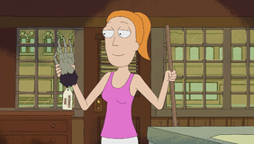

|  | 夏季史密斯（由Spencer Grammer讲[1]）是莫蒂（Morty）的17岁姐姐，是一个更为传统且通常是肤浅的少年，她一直在提高自己在同龄人中的地位。萨默（Summer）通常与母亲相似，因为她经常被证明非常机智和幽默，但她也表现出杰里寻求批准的元素。她偶尔会嫉妒莫蒂（Morty）陪着里克（Rick）进行跨维度的冒险。在第二季中，她更经常陪同瑞克和莫蒂一起冒险，有时甚至证明自己比莫蒂更胜任，特别是在需要情感上的细微差别时。有时，萨默斯被认为与里克相似，例如迅速找到一种方法来拯救自己和里克免于处决，并正确地推断出里克车库里的死蝇比他们所看到的要多。萨默（Summer）关心里克（Rick），并把他视为英雄。在“里克申·里克的折磨”中，她是家庭中唯一想挽救瑞克的人，尽管她的兄弟恳求瑞克只是个自私的混蛋。当父母同意离婚时，萨默开始怨恨父亲，开始表现出她阴暗的一面，直到她与父亲和解。 |